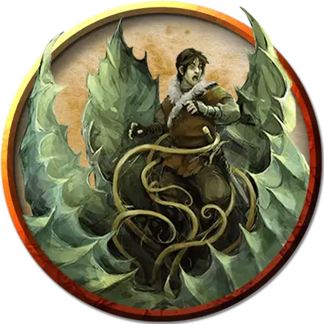

Капкан
Mantrap
Большое Растение, без мировоззрения

Класс Доспеха 12
Хиты 45 (7к10 + 7)
Скорость 5 футов
| мод | спас | ||
|---|---|---|---|
| СИЛ | 15 | +2 | +2 |
| ЛОВ | 14 | +2 | +2 |
| ТЕЛ | 12 | +1 | +1 |
| мод | спас | ||
|---|---|---|---|
| ИНТ | 1 | −5 | −5 |
| МДР | 10 | +0 | +0 |
| ХАР | 2 | −4 | −4 |
Иммунитет к состояниям ослепление, сбивание с ног, глухота, истощение
Чувства пассивное Восприятие 10, чувство вибрации 30 футов
Опасность 1 (200 опыта)
Бонус мастерства +2
Особенности
Привлекательная пыльца (1/день). Когда капкан обнаруживает любых существ поблизости, он может использовать свою реакцию, чтобы выпустить пыльцу в радиусе 30 футов.
Любой зверь или гуманоид в этом районе должен преуспеть в спасброске Мудрости Сл 11 или быть вынужденным использовать все свои движения на свой ход, чтобы как можно ближе приблизиться к капкану. Цель, попавшая под влияние, может повторять спасбросок в конце каждого своего хода, окончив эффект при успехе.
Обманчивая внешность. . Пока Капкан остаётся без движения, он неотличим от обычного растения.
Действия
Поглощение. . Рукопашная атака оружием: +4 к попаданию, досягаемость 5 футов, одно Среднее или меньшее существо. Попадание: цель попадает внутрь лиственных челюстей капкана.
При попадании в ловушку таким образом цель ослеплена и опутана, а также имеет полное укрытие от атак и других эффектов вне капкана и получает 14 (4к6) урона кислотой в начале каждого своего хода. Если капкан умирает, существо внутри него больше не опутано. Капкан может поглотить только одно существо за раз.
Описание
Капкан – гигантское плотоядное растение, напоминающее огромный мухолов. Чтобы привлечь добычу, капкан выбрасывает пыльцу, которая магически привлекает к нему существ. Хотя оно и готово защёлкнуть лиственные челюсти вокруг любого теплокровного существа, которое находится в пределах его досягаемости, оно предпочитает гуманоидную добычу.